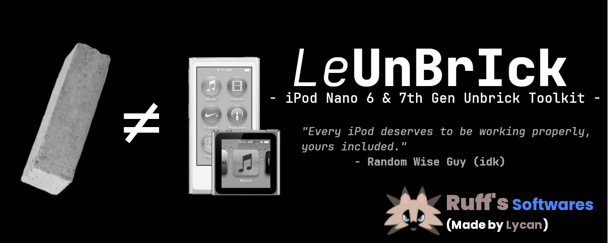

Universal Unbricker & Flasher for iPod Nano 6G & 7G (2012 / 2015)
View on GitHubLeUnBrIck is an all-in-one toolkit to restore bricked iPod Nano 6G & 7G devices. It supports both 2012 & 2015 models and works cross-platform with Linux, macOS, and Windows (BETA).
Restore bricked iPods with just a few clicks
Works on Linux, macOS, and Windows
Compatible with iPod Nano 6G & 7G
git clone https://github.com/lycanld/LeUnBrIck.gitcd LeUnBrIckchmod +x LeUnBrIck.sh./LeUnBrIck.shgit clone https://github.com/lycanld/LeUnBrIck.gitLeUnBrIck_Windows.bat or run in Command Promptrequests if missing, and run main.pyRestore iPod Nano 6G & 7G (2012 & 2015)
Flash WTF & firmware images safely
Auto-download missing .MSE firmware files
Color-coded terminal UI
Automatic installation of required tools
Windows Support (BETA)
Want help, mods, or to show off your themed iPod? Join us on Discord: